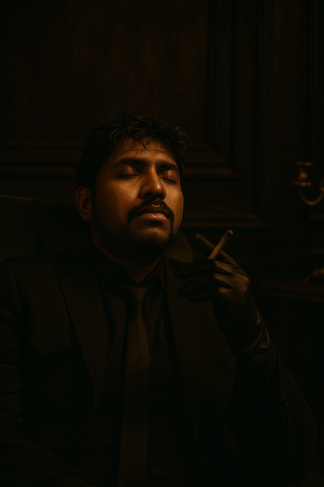

Labib Hasan Rhythm

Summary
I am a dedicated learner of programming with ongoing small experiences in life.
Currently as a learner
Education
- Bachelor of Science, Computer Science- Bangladesh University of Business And Technology
- Currently learning Web Devolopment(HTML, CSS, JavaScript, React.js, SQL, PostgreSQL)
- Learning C, Java, Python, PHP in the next few years
- If luck favours, I am going USA to complete my CS undergraduate degree in the University of South Alabama
Work experience
- As an entry level Web Devoloper
From 2025
- Voluntered people who didnt understand the concept of basic fundamentals of Web Devolopment
- Helped learners who came across tricky tasks and debug their program
- Currently as a junior web dev, I am constant learner. I learn from my mistakes and thats one of my work too!!!
Upcoming 2026 Goals I want to achieve:
I have set some goals and I want to achieve them within 2026 and these are:
Skills
- Expertise in making Website using HTML, CSS and JS. ⭐⭐⭐⭐⭐
- Fluent in English. IELTS- 6.5⭐⭐⭐⭐
- Competent in programming in C, Java. Made several projects⭐⭐⭐
Hobbies
- I like to read various books
- I like to spend some time in nature. It rejuvanetes my entire body!!!
- I like to play video games too 😊
Others
If you would like to contact me for business purposes then mail me. I will respond to you right way!!!
Contact
©Labib Hasan Rhythm. All Rights Reserved